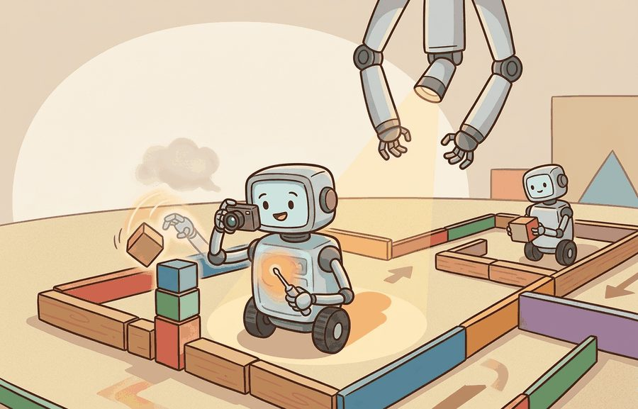
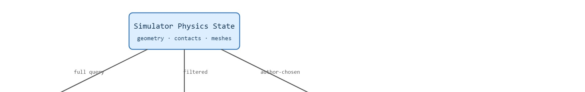

"Rendering shows you what happened. Logging shows you what the agent believed happened. Debugging is the argument between the two."
A Simulator Diagnostic Loop

This section assumes familiarity with the agent-environment loop and observation spaces introduced in section 2.2, and with the Gymnasium step API covered in sections 10.1 through 10.3. The logging and info-dictionary discipline practiced here feeds directly into the reward-shaping diagnostics in section 18.4, where distinguishing true task completion from simulator exploitation requires exactly the per-step evidence collected below. These techniques recur throughout Part VIII, especially in section 42.6, where failure detection in real manipulation pipelines relies on the same render-plus-log artifact pattern.
A robot grasps the cup perfectly in the video, yet the reward curve stays flat. Which of these is wrong: the physics, the reward function, the observation encoding, or the info dictionary? (Two ending signals matter throughout this section: terminated, meaning the episode ended because of an in-task event such as a fall or a completed goal, and truncated, meaning an external limit such as a step count cut the episode off; both are defined formally under Theory below.) Without render artifacts, episode logs, and step-level diagnostics wired up from the start, that question can consume days. In embodied AI, where sim-to-real transfer amplifies every hidden bug, the evidence trail you build during simulation is the only thing that lets you trust a policy before it touches hardware. You will instrument a Gymnasium environment end to end: choosing render modes, capturing video, building structured episode logs, and reading info dictionaries the way PettingZoo extends them to multi-agent settings, so any failure leaves a recoverable trace.
In practice, "logging" here means writing each step record to a durable file, such as a CSV or a line-delimited JSON file, keyed by seed and step index, rather than printing to the console: the worked examples below build the in-memory row structure first, and that structure serializes directly to either format with one extra line (for example, csv.DictWriter or json.dumps per row).
A policy can run for ten million steps, post a rising reward curve, and still be quietly cheating the simulator the entire time, and the only way you will ever find out is the evidence trail you decided to keep before the run started. Rendering, logging, and debugging are that trail: rendering shows what the environment believes is happening, logging preserves what happened, and debugging connects those records to a concrete failure cause. Figure 10.5A shows this workflow in action: a render frame at a key timestep sits beside the logged reward curve and an episode-length histogram, and together they pinpoint where the agent gets stuck.
The goal is to stop treating a reward curve as the whole story. An embodied environment should produce enough trace evidence to answer which observation arrived, which action was sent, what the environment returned, and why the episode ended. In practice, this is called the render-log gap, and it is where most simulation bugs hide: in typical practice, a policy trained for millions of steps with only a reward scalar can take days to debug; the same failure identified from a short render-plus-log trace can take minutes.
The render-log gap matters in embodied AI because physical robots have no rewind button. A gap that goes undetected in simulation transfers directly to hardware. A grasping policy that exploits a contact bug never seen in logs will apply the same exploit on a real arm. That exploit causes drops, collisions, or joint limit violations that damage equipment. The gap grows most dangerous when the reward improves despite wrong behavior, because the learning signal suppresses the investigator's motivation to look deeper.
So far: a reward curve alone cannot distinguish a working policy from one exploiting the simulator, the render-log gap is the mismatch between what the renderer shows and what the log records, and this gap is most dangerous in embodied AI because a hidden bug in simulation transfers unchanged onto physical hardware.
The gap arises because rendering and logging read different views of the simulator state. The renderer queries the full physics state, including geometry, contact normals, and visual meshes, and produces a pixel or text snapshot. The observation returned to the policy filters that same state down to a lower-dimensional projection, and the environment author decides what the info dictionary exposes. When those projections omit a variable, the renderer still shows it visually while the log records nothing. Only a side-by-side comparison of both artifacts reveals the discrepancy.

This environment is ready when another reader can reset it with the same seed, inspect render modes, episode logs, videos, info dictionaries, and debugging artifacts, reproduce the same rollout, and recover the same logged evidence.
Gymnasium environments declare render modes such as human, rgb_array, or ansi. The right mode depends on the artifact: a live window is useful for local debugging, an RGB array can be saved as video, and text rendering can be checked in automated tests.
Choosing a render mode fixes only the visual half of the trace; the other half is what you write down on every step. Logging should sit next to the environment loop rather than after training. Each step record should include step index, seed, action, reward, a termination flag (terminated, meaning the episode ended because of an event inside the task itself, such as a fall or a completed goal), a truncation flag (truncated, meaning the episode was cut off by an external limit such as a step count, not by the task logic), and selected info fields (the info dictionary is a free-form mapping of diagnostic values that the environment author chooses to expose alongside the observation). For robotics, add controller status, contact events, safety margins, and timing.
A render frame tells you what the environment would show an observer. A log record tells you what the policy and trainer consumed. Debugging begins when those two views disagree, such as a video showing contact while info reports no collision. This gap often reflects hidden variables not exposed in the observation, a core challenge of partial observability.
Consider MuJoCo's HalfCheetah-v4 as a concrete reference. Its info dictionary returns x_velocity, reward_run, reward_ctrl, and x_position on every step. A researcher debugging a collapsed gait can separate locomotion failure (low x_velocity) from control cost explosion (high reward_ctrl) without watching a single video. The IsaacGym and ManiSkill2 simulators extend this to per-joint torque limits, contact normals, and finger-tip force readings. In each case the diagnostic value comes from logging those keys explicitly, not from the reward scalar alone.
Code Fragment 10.5.1 uses an ansi render mode (a text-based render mode that returns a printable string instead of an image, so it works over a remote terminal or in automated tests with no graphics window) so the example works without a graphics window. The render frame gives a human-readable view, while the step return gives the machine-readable trace.
# Use text rendering when a debug check should run without a GUI.
# The step trace still records reward, ending flags, and info keys.
import gymnasium as gym
env = gym.make("FrozenLake-v1", render_mode="ansi", is_slippery=False)
observation, info = env.reset(seed=3)
frame = env.render()
visible = [line for line in frame.splitlines() if line.strip()]
observation, reward, terminated, truncated, info = env.step(1)
clean_row = visible[0].replace("\x1b[41m", "[").replace("\x1b[0m", "]")
print(clean_row)
print({"obs": int(observation), "reward": reward, "ended": terminated or truncated, "info_keys": sorted(info.keys())})
env.close()The expected output combines a human-readable render frame with a machine-readable step record. The frame shows the current grid state, while the dictionary confirms that the sampled transition did not end the episode and that a probability diagnostic is available in info.
Input: Gymnasium environment env, policy $\pi_\theta$, episode seed $s$, render mode $m \in \{\texttt{rgb\_array}, \texttt{ansi}, \texttt{human}\}$, info keys $K = \{k_1, \ldots, k_n\}$ to monitor
Output: Trace $\mathcal{T} = \{(t, a_t, o_t, r_t, d_t, \mathbf{f}_t)\}_{t=0}^{T}$, failure label $\ell \in \{\texttt{perception}, \texttt{control}, \texttt{timeout}, \texttt{reward\_artifact}, \texttt{none}\}$
env.reset(seed=s) to obtain $o_0$ and baseline info; record the wrapper stack and render mode $m$.env.render() using mode $m$; store alongside $o_0$ for visual alignment.env.step($a_t$) to receive $(o_{t+1}, r_t, \textit{terminated}_t, \textit{truncated}_t, \textit{info}_t)$.info contradicts the rendered scene (e.g., no collision logged but contact visible).Trace the diagnostic loop with a tiny three-episode example, seed $s=17$, monitoring info keys $K=\{\texttt{TimeLimit.truncated}\}$. After each episode we read the two ending flags and apply step 9 of the algorithm.
terminated=False, truncated=True. The pole never fell; the agent survived to the 500-step limit window and got cut off. Frame at $t=400$ shows a 14-degree lean. Logged return $G=412$. Step 9 fires: $T$ near $T_{\max}$ and truncated dominates, so candidate label is timeout.terminated=True, truncated=False. The pole genuinely fell. Frame at $t=9$ shows a 35-degree lean past the failure threshold. Logged return $G=9$. This is a true terminal state, label none (honest failure, not an artifact).terminated=False, truncated=True. Same pattern as episode 1.Aggregate: mean length $(412+9+415)/3 = 278.7$, which alone looks like "partly converged." But two of three episodes carry truncated=True with no terminated=True, so the loop labels the run $\ell \leftarrow \texttt{timeout}$. The reward scalar hid this; the per-step ending-flag log exposed it in three episodes.
Wayve's GAIA driving simulator pairs every rendered camera frame with a structured per-step log of vehicle state, predicted trajectory, and intervention flags, exactly the render-log split described here. When a safety driver disengages, engineers replay the saved frame beside the logged perception output to decide whether the model misread the scene or the planner chose badly. That render-versus-log comparison is what separates a perception bug from a control bug before any code is touched.
Gymnasium render modes and wrappers such as episode statistics recording turn common debugging needs into standard calls. The shortcut works best when the saved artifact includes both visual evidence and structured fields, rather than only one or the other.
info.A usable environment wrapper for this section records render modes, episode logs, videos, info dictionaries, and debugging artifacts, plus observation and action spaces, reset seed, info dictionary fields, and reproducible evidence artifacts.
The common mistake is debugging from aggregate reward alone. A reward curve can improve while the robot learns to exploit a simulator artifact, ignore a safety margin, or complete the task in a way the render trace would immediately expose.
Consider a specific case: a CartPole agent trained with a mistuned time limit reaches mean episode length 450 steps and appears converged. The reward curve is flat and positive. But the step log reveals that 30% of episodes terminate via truncated=True rather than terminated=True, meaning the pole never actually fell: the agent is surviving by timeout, not by balance. A render video confirms the pole drifting to a 15-degree lean at step 400 in most "successful" episodes. Without logging both ending flags and reviewing at least one video, the timeout-survival artifact is invisible in the aggregate metric. In practice, researchers who catch this via a step log typically need fewer than 20 episodes to isolate the fault; researchers working from reward curves alone routinely spend hundreds of episodes tuning hyperparameters before realizing the agent never solved the task at all.
A common assumption is that env.render() and the observation from env.step() carry the same information. In embodied AI, that assumption is wrong and dangerous. The renderer queries the full physics state: geometry, contact normals, and mesh positions. The observation is a filtered, lower-dimensional projection of that same state and may omit variables entirely. A grasping policy can receive an observation with no contact signal while the render frame shows finger-tip collision. The agent is blind to information that a human viewer can read directly from the frame. Treat render output as a diagnostic window into simulator ground truth. Treat the observation as what the policy actually receives. Log both views separately and compare them step by step to find the gap between what the environment knows and what the agent can act on.
Think of a head chef watching from above a busy kitchen versus a line cook reading only the printed ticket. The chef sees every pan, smells the sauce burning, and notices the garnish is wrong. The cook reads only what the ticket says: "salmon, medium, table 7." Both are looking at the same meal being prepared, but one has the full sensory picture and the other has a filtered summary. The render frame is the chef's overhead view of ground truth. The observation is the ticket the policy actually acts on. When the ticket omits "sauce is burning," the cook has no way to know, even though the evidence is plainly visible from above.
For a grasping policy, save one short video, the step log, and the final info dictionary for every failed evaluation seed. A reviewer can then tell whether failure came from perception drift, action saturation, collision, time limit, or reward mislabeling, which maps directly to the failure detection and recovery strategies used in real manipulation pipelines.
For rendering, logging, and debugging, the useful test is simple: could a teammate point to the log line, plot, or trace that proves the idea changed the agent's next action?
Differentiable and neural rendering for simulation debugging (2024-2026). Rather than treating the rendered frame as a passive visual artifact, recent work embeds differentiable renderers directly inside the RL loop so that gradient information flows through pixel loss back to physics parameters. The GROOT project (NVIDIA, 2024) and the Genesis physics engine (2024) both expose differentiable contact and geometry pipelines that, in principle, let a researcher ask: "which simulated surface property, if changed, would have made the rendered frame match the real sensor image?" This directly tightens the render-log gap by making the gap itself a loss signal rather than a post-hoc diagnostic.
Automated anomaly detection in episode logs (2024-2025). Large-scale robot learning datasets such as the Open X-Embodiment collection and HumanoidBench (2024) have prompted work on learned log auditors that scan per-step info dictionaries for distributional anomalies without human review. The GROOT generalist robot policy and related work from the Berkeley Robot Learning Lab use trajectory encoders trained on normal episodes to flag steps where contact forces, joint torques, or end-effector velocities are out of distribution; early reports suggest this can replace ad-hoc threshold rules with learned detectors that generalize across morphologies, though broad cross-lab validation is still limited.
Simulation-to-real render-gap quantification (2024-2025). The sim-to-real gap has traditionally been addressed by domain randomization (training the policy across many randomized simulation parameters, such as lighting, friction, or mass, so it generalizes to the real world's specific, unknown values), but a parallel line of work measures how much the rendered observation distribution diverges from real sensor data as a first-class logged metric. Work from the Physical Intelligence (pi) team and from DeepMind's RoboAgent line (2024) pairs simulation rollout logs with paired real-world trials and computes per-feature Wasserstein distances (a measure of how much probability mass must move to turn one distribution into another, used here as a distance score between simulated and real sensor readings) between simulated and real observation marginals, producing a per-environment "gap score" that informs when a policy is ready for hardware transfer.
Open problem for PhD students. No standard interface exists for attaching a causal trace to an episode log: given a failure at step t, which observation features at steps 1 through t-1 causally contributed to that failure, and how does the answer change when the render frame at step t shows information the observation did not encode? Solving this would unify render-log debugging with causal attribution, producing a step-level "fault tree" that a researcher could inspect instead of watching full video replays.
If a rollout fails, can you open one artifact and identify the observation, action, reward, ending flag, and visible scene at the failure step? If not, the logging plan is too thin.
Rendering records what the environment displays; logging records what the algorithm saw and optimized. A strong debugging workflow keeps the two synchronized by seed and step index. A reward curve that rises while the render trace shows a colliding arm is not progress but a hidden simulator exploit.
The graduate-level habit is to require traceability from a reported number back to at least one representative episode, the same discipline that the evaluation protocol and seeding rules build on. A success rate without failure traces is fragile because it cannot show which assumptions survived contact with the simulator.
| Tool or Library | Role in the Topic | Builder Advice |
|---|---|---|
human render mode | Live visual inspection | Use locally when a developer needs to watch behavior. |
rgb_array render mode | Image or video artifact | Use for saved rollouts and publication-quality inspection. |
ansi render mode | Text artifact | Use for deterministic tests and lightweight debugging. |
info dictionary | Machine-readable diagnostics | Use for contact flags, reward terms, hidden state checks, and timing. |
| Step log | Episode reconstruction | Use as the common index joining actions, rewards, endings, and render frames. |
With those tool roles settled, the question becomes how to bind them together into a single inspectable record. A robust debugging implementation starts with a tiny trace format. The trace should be small enough to inspect by hand and structured enough to join with videos, metrics, and safety events.
terminated, truncated, and selected info fields in each row.# Record a compact step trace that can be inspected after rollout.
# Each row preserves reward, ending status, and diagnostic keys.
import gymnasium as gym
env = gym.make("CartPole-v1")
observation, info = env.reset(seed=17)
env.action_space.seed(17)
trace = []
for step_index in range(3):
action = env.action_space.sample()
observation, reward, terminated, truncated, info = env.step(action)
trace.append({
"step": step_index + 1,
"action": int(action),
"reward": float(reward),
"ended": terminated or truncated,
"info_keys": sorted(info.keys()),
})
print(trace)
env.close()The expected output is a short rollout ledger with one dictionary per step. Read it as a minimal debugging artifact: every action, reward, and ending flag is preserved in order, so a later aggregate return can still be traced back to concrete behavior.
When an experiment about rendering, logging, and debugging fails, avoid labeling the whole method as weak. First assign the failure to perception, state estimation, planning, control, timing, data coverage, or evaluation. Then rerun one controlled perturbation that isolates the suspected cause. This pattern turns a disappointing rollout into a reusable diagnostic asset.
Rendering makes behavior visible, logging makes behavior auditable, and debugging needs both views joined by seed and step index.
Run a five-step Gymnasium rollout and save a trace with action, reward, terminated, truncated, and one selected info key. Then write the one failure question that trace can answer.
Goal: empirically reproduce the render-log gap by finding episodes that "succeed" by timeout rather than by balance.
Tools needed: Python with gymnasium installed (pip install "gymnasium[classic-control]"); the built-in CartPole-v1 environment; optionally the RecordVideo wrapper plus moviepy for saving MP4 clips.
Steps: Run 50 episodes of a random or lightly trained policy. For every step, log action, reward, terminated, truncated, and the pole angle (observation index 2) to a CSV. Wrap the environment with RecordVideo so each episode also saves a frame sequence keyed by episode index.
What to vary: change the episode time limit by wrapping with gymnasium.wrappers.TimeLimit(env, max_episode_steps=...) across values like 100, 200, and 500; also try a stronger policy if you have one.
What to observe: count what fraction of episodes end with truncated=True versus terminated=True. For one high-truncated episode, open the saved video and read the pole angle near the final step. You should see episodes that look "successful" in the length metric while the render frame shows the pole leaning far off vertical, the exact artifact aggregate reward hides.
The next section should inherit the Rendering, logging, and debugging interface contract and change only the next environment-design variable under study.
Beginner (weekend): CartPole render-log dashboard. Wrap CartPole-v1 with a Gymnasium RecordVideo wrapper and add a step logger that writes action, reward, terminated, truncated, and pole angle to a CSV on every step; the key challenge is aligning video frame indices with log row indices so that any flagged anomaly in the CSV maps to an exact frame in the saved MP4. Intermediate (1-2 weeks): PyBullet contact-gap detector. Build a grasping environment in PyBullet that logs per-finger contact normals from the physics engine to the info dictionary each step, then write a diagnostic script that compares those contact fields against rgb_array render frames and raises an alert whenever the rendered scene shows collision but info reports zero contact force; the key challenge is synchronizing the PyBullet contact query with the Gymnasium render call so both reflect the same physics substep. Advanced (3-4 weeks): LeRobot sim-to-real trace auditor. Train a manipulation policy in a MuJoCo Gymnasium environment using LeRobot's dataset format, record full episode bundles (video, joint-state log, reward, ending flags) for every evaluation seed, then replay those bundles against real Franka Panda hardware logs from the LeRobot Koch benchmark and compute a per-step render-log gap score that flags which simulation observations diverge most from real sensor readings; the key challenge is defining a comparable observation projection that lets simulation and real logs share the same diagnostic keys despite different sensor frequencies.
This paper explains why multi-agent environments need explicit agent ordering and interface discipline. It gives researchers the context behind the Agent Environment Cycle (AEC) and parallel API choices described in this chapter. Readers should connect this source to rendering, logging, and debugging when deciding what is reusable, what is benchmark-specific, and what must be remeasured.
Brockman, G. et al. (2016). "OpenAI Gym." arXiv.
The original Gym paper explains the environment abstraction that Gymnasium modernizes. It is useful for readers comparing legacy examples with the maintained Farama stack. Readers should connect this source to rendering, logging, and debugging when deciding what is reusable, what is benchmark-specific, and what must be remeasured.
Farama Foundation. "Gymnasium Documentation."
The official Gymnasium docs define the reset, step, render, terminated, truncated, and info conventions used by maintained environments. Readers implementing custom environments should use this as the API reference. Readers should connect this source to rendering, logging, and debugging when deciding what is reusable, what is benchmark-specific, and what must be remeasured.
Farama Foundation. "PettingZoo Documentation."
PettingZoo defines maintained APIs for multi-agent reinforcement learning. It is directly relevant when a section moves from one embodied agent to turn-based, simultaneous, or mixed multi-agent interaction. Readers should connect this source to rendering, logging, and debugging when deciding what is reusable, what is benchmark-specific, and what must be remeasured.
Stable-Baselines3 Contributors. "Stable-Baselines3 Documentation."
Stable-Baselines3 gives a practical reference for how environment spaces, vectorized environments, wrappers, and evaluation callbacks are consumed by training code. Engineers should read it when turning a custom environment into a reproducible RL experiment. Readers should connect this source to rendering, logging, and debugging when deciding what is reusable, what is benchmark-specific, and what must be remeasured.